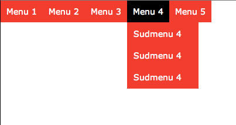

Створення інтерактивних сторінок за допомогою JavaScript.
Мета роботи
Розглянути приклади використання коду JavaScript в HTML-документі. Навчитись підключати зовнішні файли коду та вбудовувати код всередині тіла документу.
Обладнання
Персональний комп'ютер. Текстовий редактор Sublime Text 3 або Notepad++. Пакет програм XAMPP. Web-браузер Chrome, Firefox, Opera, Internet Explorer*
Теоретичні відомості
Хід роботи
Перевірити чи встановлено пакет програм web-розробника XAMPP
Викликати панель керування xampp-control.exe
Впевнитись, що web-сервер Apache запущений
Перейти за адресою http://127.0.0.1/ або http://localhost/ та впевнитись, що сторінка вітання XAMPP завантажилась
Очистити зміст каталогу C:\xampp\htdocs\
Створити файл index.html в середині каталогу C:\xampp\htdocs\
Файл index.html зробити з порожнім вмістом секції <body>
Створити на сторінці елемент керування <button> типу button
Використовуючи атрибут HTML onClick тегу <button> запрограмувати обробник подій, що будет виводити повідомлення "Hello World"
Використовуючи цикли, написати сценарій що виводить таблицю факторіалів від 1 до 8
Використовуючи цикли, написати сценарій, що виводить таблицю множення від 2 до 9. Для форматування таблиці множення використати теги HTML для формування таблиці
Використовуючи цикли та умовний оператор вивести всі парні числа від 2 до 100
Використовуючи цикли та умовний оператор вивести всі числа від 3 до 99, які діляться націло на 3. Числа розмістити на сторінці по 5 штук в рядку
Модифікувати створену раніше фотогалерею наступним чином:
Реалізувати можливість відкривати фотографію у більшому розмірі після кліку на прев'ю
Закривати повнорозмірне зображення при натисненні на певну кнопку
Модифікувати створені раніше сторінки наступним чином: реалізувати дворівневе випадаюче меню за допомогою JavaScript

Приблизний вигляд меню
Примітка: дане меню можливо реалізувати виключно засобами CSS. Необхідно призначити обробники подій на дії користувача мишою для розкриття та закриття меню
У "підвал" сторінки помістити інформацію про виконавця роботи: група, ПІБ, дата виконання.
Для кожного етапу роботи зробити знімки екрану або скопіювати текст консолі та додати їх у звіт з описом кожного скіншота
Зберегти звіт у форматі PDF
Роздрукувати звіт та письмово відповісти на контрольні запитання
Контрольні питання
Які цикли в JavaScript ви знаєте?
Який синтаксис має умовний оператор в JavaScript?
Яким чином перевірити чи ділиться на ціло одне число на інше?